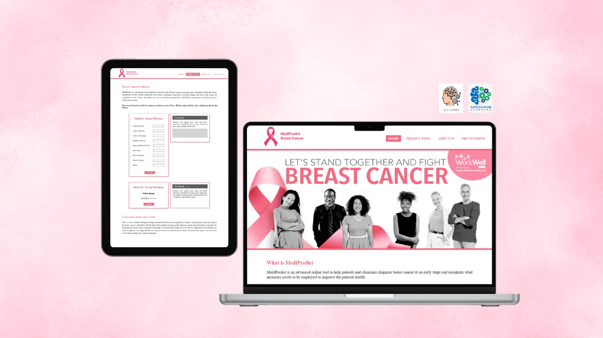
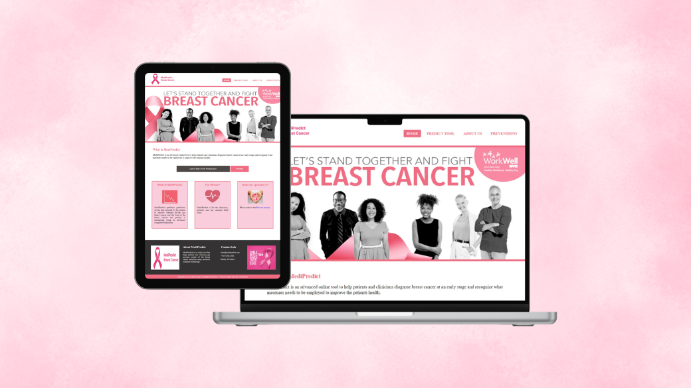
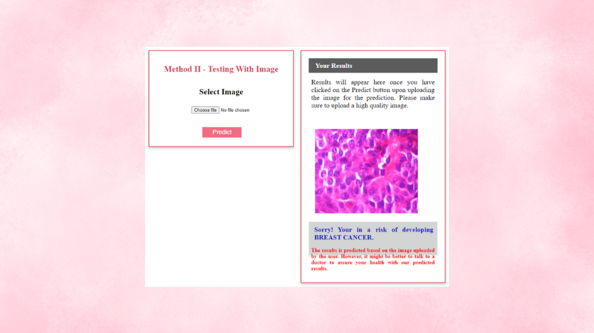
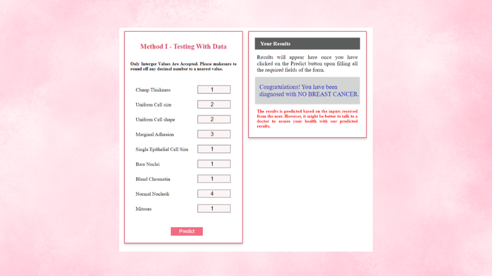
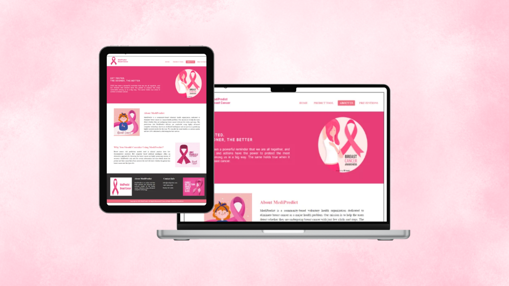
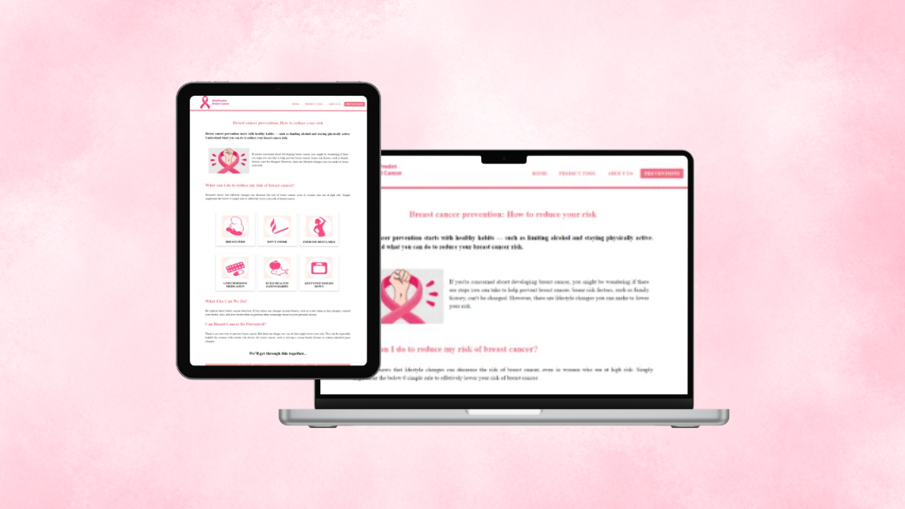

A machine learning and deep learning web application that predicts breast cancer diagnosis from clinical data or histopathological images — achieving 97.14% accuracy with SVM and 95.65% with CNN, deployed via a Flask web interface. Awarded First Class Honours.

🩺assets/breast-cancer-ml/cover.pngMediPredict is a breast cancer prediction web application that uses machine learning and deep learning to help detect the presence or absence of breast cancer at an early stage. The system accepts two types of input: clinical numerical data about the patient, or a histopathological microscopy image of breast tissue — giving users two independent prediction methods within a single application.
Breast cancer remains one of the leading causes of cancer death worldwide, with many cases going undetected until later stages due to diagnostic errors and limited access to specialist expertise. This project explored whether machine learning and deep learning could provide an accurate, accessible, and cost-effective alternative prediction tool — and deployed the best-performing algorithms into a usable web application anyone could interact with.
The project was completed as part of my BSc in Software Engineering at Cardiff Metropolitan University (via ICBT), achieving First Class Honours. The work covered the full pipeline: literature review, data acquisition, algorithm selection, training and evaluation, comparative analysis, system design using UML, web application development with Flask, form validation, and black-box testing.
One of the distinctive features of this project is that it supports two completely independent prediction pathways in a single web application — each using a different dataset, a different class of algorithm, and a different input type.
Four machine learning algorithms were trained and evaluated on the Wisconsin Breast Cancer Diagnostic dataset. All were measured on accuracy, precision, recall, and F1 score for both benign and malignant classes, as well as confusion matrix results.
Three deep learning architectures were trained and evaluated on the BreakHis histopathological image dataset. Models were compared on validation accuracy and validation loss — the key metrics for assessing how well a model generalises to unseen data.
The best-performing models (SVM + CNN) were integrated into a Flask web application called MediPredict. The interface was designed to be approachable and clear for non-technical users — including a disclaimer popup before predictions, validated input forms, and a results section that always reminds users to consult a doctor before acting on the output.


📊Method I — data prediction result
🖼️Method II — image prediction resultBeyond the prediction tool, MediPredict includes an About Us page explaining the system and its purpose, a Preventions page giving users evidence-based guidance on reducing breast cancer risk, and thorough input validation on all forms.

ℹ️About Us page
🌿Preventions pageThe entire stack is Python-based — scikit-learn and TensorFlow/Keras for model training, Flask to serve the models as a web application, and standard HTML/CSS/JS for the front end. The trained models were serialised and loaded at runtime, with Flask handling the routing, form submission, prediction calls, and response rendering.